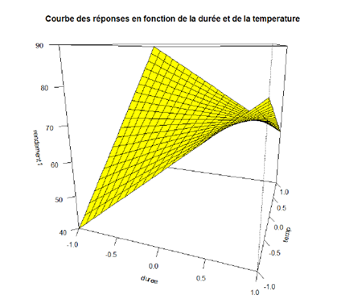
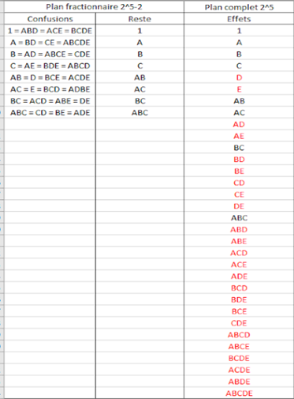

Data analysis using Experimental Design
For this group project, we had one week to teach ourselves a statistical method called « experimental design » (also called design of experiments). This method works by reducing the number of trials needed for an experiment, by breaking the system being studied into several simple factors. In our case, we had to reduce the number of tests needed to create the best possible pancake recipe. We had several factors to manage for this experiment: type of flour, type of sugar, cooking time, cooking temperature, and spices. Each of these variables had two possible values (for example, for the sugar variable: white sugar or brown sugar).
We wrote an R script to run different types of experiment designs. The first was a full design, meaning we tested every possible combination, while the second was a fractional design, meaning we reduced the number of tests by blending some variables together. At each step, we studied the results and checked how meaningful they were.
This project ended with a report explaining our approach, including the scripts used to answer the assigned questions.
Skills learned:
- Context and case uses of experimental design
- Explaining one variable using several other variables
- Improving my coding skills in R
- Self-teaching a statistical method
Illustrations

3D graph that show the results depending on the cooking time and temperature

Various methods of combinaison for the differents experimental designs that we tested. The letters respectively represent : floor type, sugar type, cooking time, cooking temperature, and spices